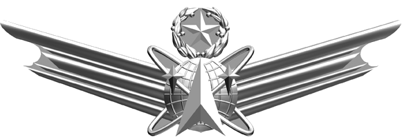
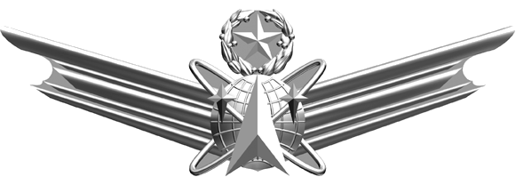
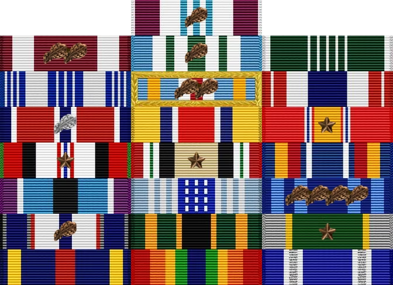
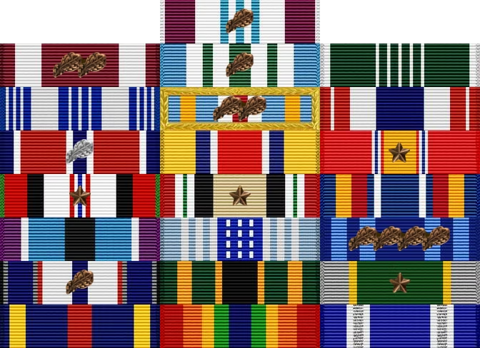

Major Kevin Walchko
 

 

Academics
- 2003 DOCTOR OF PHILOSOPHY, Mechanical Engineering,
University of Florida [Funded through Fellowship from NASA Goddard
Space Flight Center]
- 2002 MASTERS IN SCIENCE, Electrical Engineering,
University of Florida
- 1999 MASTERS IN SCIENCE, Mechanical Engineering,
University of Florida [Funded through Fellowship from NASA Goddard
Space Flight Center]
- 1997 BACHELOR OF SCIENCE, Mechanical Engineering,
University of Florida
Deployments
- 2013 ISAF Joint Command, CJ2, ISR Directorate,
Kabul, Afghanistan
- 2009 Defense Contract Management Agency-Southern
Iraq, BIAP, Iraq
Career
- 2024 National Reconnaissance Office, Chantilly, VA
- Chief, COMM Lifecycle Readiness
- 2021 AFRL Space Vehicles Directorate, Kirtland AFB
- Chief Engineer, Oracle cislunar SSA mission
- Program Manager, UHF Demo Satellite
- 2019 National Geospatial Intelligence Agency (NGA),
Springfield, VA
- Test Director, integrating revolutionary overhead capabilities to
the NSG
- 2016 Dean of Faculty, US Air Force Academy, Co
Sprints, CO
- Director of Operations, oversaw Electrical and Computer Engineering
Dept’s curriculum
- 2014 Commandant of Cadets, US Air Force Academy, Co
Springs, CO
- Division Chief, Plans, responsible for all military instruction for
cadets
- 2010 National Reconnaissance Office, Chantilly, VA
- Develop and deliver on-orbit SAP systems
- 2006 Space Superiority Systems Wing, Los Angeles
AFB
- Develop and deliver on-orbit SAP systems
- 2003 AFRL Space Vehicles Directorate, Kirtland AFB
- Deputy Program Manager, $300M lasercomm payload program for LAAFB
MJPO
Professional Schools
- 2014 Air Command and Staff College,
correspondence
- 2010 Squadron Officer School, residence &
correspondence
- 2004 Air and Space Basic Course, residence
Publications
- Thomas B., Bracamonte, M., Kim H., Talosaga A., and Walchko K.,
“R2D2 Capstone Project”, 15th Annual CSURF, Colorado Springs, CO, 28
April 2019.
- Hindman, C.,
Engberg, B., Hunt, J., and Walchko, K., “Optimal GEO Lasercomm Terminal
Field of View for LEO Link Support”;, SPIE Free-space Laser
Communications Technologies XVIII, 2006.
- Hindman, C., Walchko, K., and
Spratley, C., “Point-ahead Tracking for Space to Air Laser Pointing”,
MSS Active Electro-Optic Sensor Systems Conference, Columbia, MD,
2005.
- Grzywna, J.,
Walchko, K., and Nechyba, M., Subjugator: A Reconfigurable AUV, 2nd AIAA
Systems, Technologies, and Operations Aerospace, Land, and Sea
Conference and Workshop & Exhibit, San Diego, CA, Sept 15-18,
2003.
- Walchko, K., “Robust
Attitude Control with Disturbance Compensation,” Ph.D. Dissertation,
University of Florida, Gainesville, FL, 2003.
- Walchko, K.,
Nechyba, M., Schwartz, E., and Arroyo, A., “Embedded Low Cost Inertial
Navigation System,” Florida Conference on Recent Advances in Robotics,
FAU, Dania Beach, FL, May 8-9, 2003.
- Walchko, K.,
Novick, D., and Nechyba, M., “Development of a Sliding Mode Control
System with Extended Kalman Filter Estimation for Subjugator,” Florida
Conference on Recent Advances in Robotics, FAU, Dania Beach, FL, May
8-9, 2003.
- Walchko, K., “Low Cost
Inertial Navigation,”, Masters Thesis, University of Florida,
Gainesville, FL, August, 2002.
- Grzywna, J., Laine, J.,
Walchko, K., Dye, R., Jain, A., Ivano, N., Nechyba, M., Eric M.
Schwartz, Arroyo, A., Subjugator 2002, 5th International Autonomous
Underwater Vehicle Competition, San Diego, CA, July 31 Aug. 4,
2002.
- Walchko, K. and Mason,
P., Inertial Navigation, Florida Conference on the Recent Advances in
Robotics, Miami, FL, 23-24 May 2002.
- Grzywna, J., Laine, J.,
Walchko, K., Dye, R., Jain, A., Ivano, N., Nechyba, M., Eric M.
Schwartz, Arroyo, A., Subjugator: The Development of an Autonomous
Underwater Vehicle, Florida Conference on the Recent Advances in
Robotics, Tallahassee, FL, 10-11 June 2001.
- Grzywna, J.,
Kanowitz, S., Laine, J., Nortman, S., Novick, D., Walchko, K.,Nechyba,
M., Eric M. Schwartz, Arroyo, A., SubjuGator: Sinkin’ is Easy, AIAA
Conference, Sep 2003.
- Walchko, K. and Mason, P.,
Development of a Fuzzy Sliding Mode Controller for Satellite Attitude
Control, Graduate Student Research Project Report, Fall 2000.
- Walchko, K., Mason, P.,
and Crane, C., A MIMO fuzzy Controller for Tracking: Robot Control,
Florida Conference on the Recent Advances in Robotics, Gainesville, May
1999.
- Walchko, K. and
Mason, P., Intelligent Attitude Control with Uncertainty and Disturbance
Compensation, Flight Mechanics and Estimation Technology Symposium, NASA
Goddard, May 1999.
- Walchko, K., “Development
of a Generic Fuzzy Logic MIMO Controller for Attitude Control,”, Masters
Thesis, University of Florida, Gainesville, FL, April, 1999.
- Petroff, N., Mason, P., and
Walchko, K., “Numerical Stability Analysis of a Fuzzy Controller,”
Artificial Neural Networks in Engineering, St. Louis, Ms, 1-4 Nov. 1998.
(First Runner-Up for best paper).
- Walchko, K. and Mason, P.,
“Development of a Generic Hybrid Fuzzy Controller, Artificial Neural
Networks in Engineering, St. Louis, Ms, 1-4 Nov. 1998.